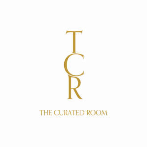

Trade Mark Journal No.2025/041 10 October 2025
UK00004263079 12 September 2025 (35,36,39,41,43,45)

- Class 35
- Online ordering services; Business meeting planning; Promotion of special events; Arranging promotion of charitable fundraising events; Corporate planning; Business planning; Event marketing; Strategic business planning; Conducting of commercial events; Planning and conducting of trade fairs, exhibitions and presentations for economic or advertising purposes; Organisation of exhibitions and events for commercial or advertising purposes.
- Class 36
- Credit services relating to travel; Agency services for arranging travel insurance; Consultancy and brokerage services relating to travel insurance.
- Class 39
- Travel services; Services for the booking of travel; Ticketing services for travel; Travel information services; Travel agency services for business travel; Reservation services for travel; Travel reservation services; Travel guide services; Guide services (Travel -); Travel guide and travel information services; Travel agency services for arranging travel; Travel consultancy and information services; Booking agency services for travel; Travel agents services for arranging travel; Travel agency services for arranging holiday travel; Travel and transport reservation services; Making travel bookings (Services for -); Booking agency services relating to travel; Computerised reservation services for travel; Holiday travel reservation services; Ticket booking services for travel; Agency services for arranging travel; Reservation services for airline travel; Travel arrangement services; Tourist travel reservation services; Booking agency services for airline travel; Itinerary travel advice services; Services for the booking of seats for travel; Travel reservation and booking services; Making travel reservations (Services for -); Reservation services for air travel; Travel ticket reservation services; Ticket reservation services for travel; Ticket reservation services (Travel -); Travel agency services relating to travel by omnibus; Travel arrangement and reservation services; Information services relating to travel; Tour operator services for the booking of travel; Providing online information relating to travel; Arranging of passenger transportation services for others via an online application; Computerised information services relating to travel reservations; Providing information about booking business travel, via the Internet; Travel agency services, namely, making reservations and bookings for transportation; Computerised information services relating to travel; Travel agency services, namely arranging transportation for travelers; Package holiday services for arranging travel; Seat reservation services for travel; Providing taxi booking services via mobile applications; Providing tourist travel information, via the Internet; Timetable enquiry services relating to travel; Reservation services for travel by air; Reservation services for booking seats [travel]; Itinerary planning services; Trip planning services; Travel route planning; Route planning services.
- Class 41
- Services for the publication of travel guides; Special event planning; Special event planning consultation; Ticketing and event booking services; Organization of entertainment events; Wedding celebrations (Organisation of entertainment for -); Organisation of entertainment events; Ticket reservation for cultural events; Party planning; Organization of dancing events; Hosting of entertainment events; Party planning [entertainment]; Party planning consultation; Organisation of cultural events; Ticket reservation and booking services for cultural events; Organising events for entertainment purposes; Ticket procurement services for entertainment events; Party planning services; Arranging of cultural events; Arranging of sporting events; Organising events for cultural purposes; Organizing cultural and arts events; Arranging of educational events; Organization of events for cultural purposes; Booking of seats for entertainment events; Booking of performing artists for events (services of a promoter).
- Class 43
- Providing travel lodging information services and travel lodging booking agency services for travelers; Travel agency services for booking restaurants; Travel agency services for booking accommodation; Travel agency services for booking temporary accommodation; Travel agency services for making hotel reservations; Travel agency services for reserving hotel accommodation; Arranging of wedding receptions [venues].
- Class 45
- Wedding ceremony planning and arranging consultation services; Planning and arranging of wedding ceremonies.
SRC Capital Partners Ltd